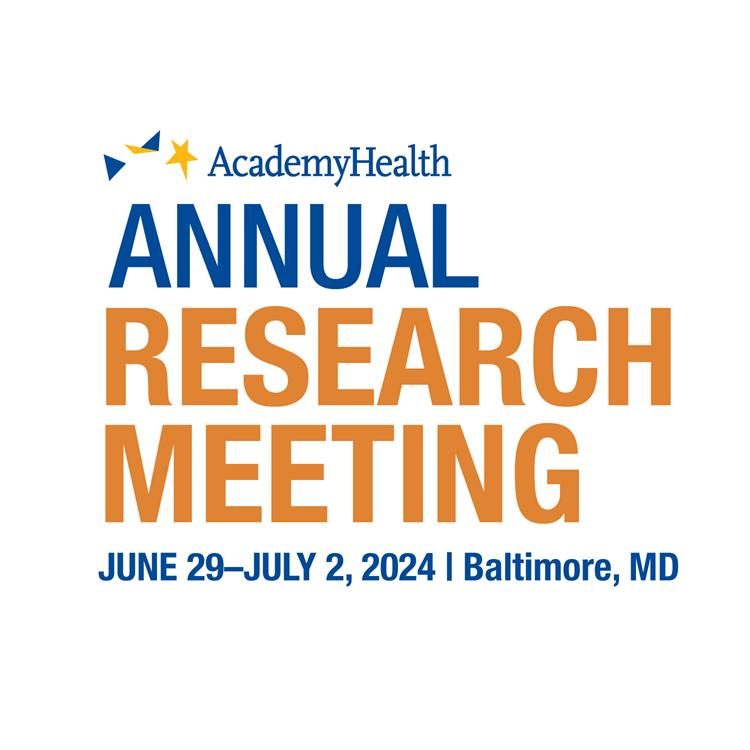

Refereed Journal Articles
-
Medicaid Expansion for Undocumented Adults and its Association with Health Insurance Coverage among Noncitizens in California, 2017–2023
Health Affairs Scholar, qxag002 (2026)
Evaluates the impact of California's Medicaid expansion for undocumented adults on health insurance coverage among noncitizen populations using a differences-in-differences design with California Health Interview Survey data.
-
U.S. Primary Care Practice Capabilities Linked to Language Services for Patients with Limited English Proficiency
Journal of General Internal Medicine (2025)
Examines how primary care practice organizational capabilities—including staffing, electronic health records, and quality improvement processes—are associated with language service availability for limited English proficient patients.
-
Medicaid expansion increased income among newly eligible adults
Health Affairs Scholar, 3(5), qxaf091 (2025)
Uses quasi-experimental methods to evaluate whether Medicaid expansion under the ACA increased earned and unearned income among newly eligible low-income adults, using administrative tax data from the IRS Statistics of Income.
Conference Presentations

Annual Research Meeting